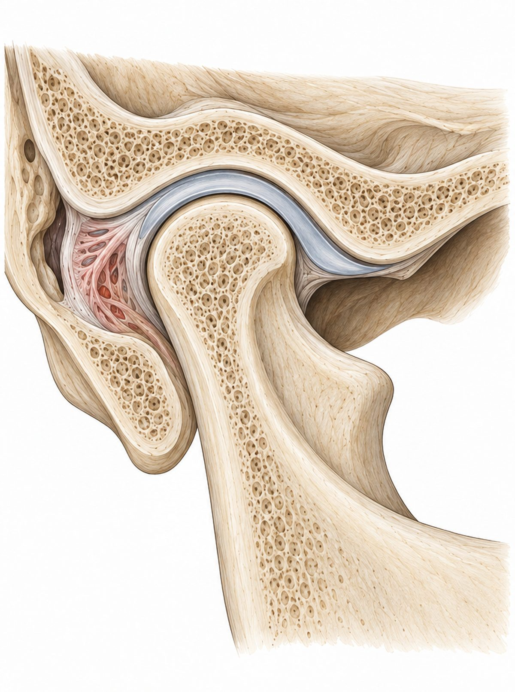
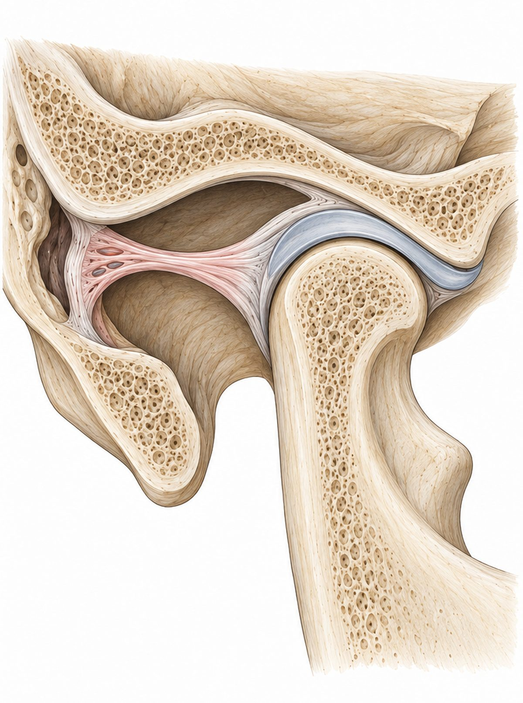

턱관절이 어떻게 움직이는지, 지금 겪는 증상이 턱과 어떤 관계인지
그림과 움직이는 도해로 하나씩 설명합니다.
입을 벌리는 동작은 한 가지가 아니라 두 단계로 일어납니다.


입을 조금 벌릴 때는 턱뼈의 둥근 머리(하악 과두)가 제자리에서 문의 경첩처럼 돌기만 합니다.
파란 회색 띠가 관절원판(디스크)입니다. 턱뼈 머리가 미끄러질 때 디스크가 함께 따라가며 뼈끼리 닿지 않게 받쳐 줍니다.
귀 바로 앞, 머리뼈와 아래턱뼈가 만나는 자리입니다.

지금 불편한 증상을 고르면 해당 설명으로 이동합니다.

귀 검사는 정상인데 먹먹함과 '삐—' 소리가 계속될 때, 귀 바로 앞의 턱관절을 살펴봅니다.
자세히 보기 →
관자놀이가 지끈거리는 두통이 반복된다면, 씹는 근육이 보내는 통증일 수 있습니다.
자세히 보기 →
입을 벌리거나 다물 때 딱딱, 사각 소리가 난다면 디스크의 움직임을 확인해 봅니다.
자세히 보기 →
갑자기 입이 안 다물어지거나 안 벌어질 때, 당장 해야 할 일과 하면 안 되는 일이 있습니다.
자세히 보기 →
자는 동안의 이갈이와 이 악물기는 체중만큼의 힘으로 턱을 누릅니다.
자세히 보기 →
턱과 목의 근육은 한 팀으로 움직입니다. 목·어깨 결림이 턱에서 시작되기도 합니다.
자세히 보기 →
안면비대칭이 신경 쓰인다면 턱의 움직임과 맞물림부터 확인해 봅니다.
자세히 보기 →
사진에는 이상이 없다는데 통증이 이어진다면, 예민해진 신경을 함께 봐야 합니다.
자세히 보기 →